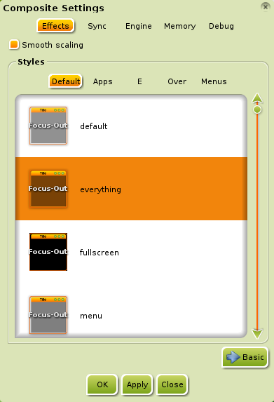

[Klicke auf Bilder zum vergrößern]
Hier wollen wir einmal versuchen ein paar Fragen zu beantworten die sich unsere neuen Nutzer häufig stellen:
Warum sind nur so wenige Programme installiert?
Teil der Bodhi Linux Philosophie ist Minimalismus und Wahlfreiheit für Nutzer. Wir glauben das unsere Nutzer intelligent genug sind um sich selbständig die Programme aussuchen zu können die sie verwenden möchten und daher stellen wir Dir mit dem Bodhi Linux AppCenter einen einfachen Weg dafür zur Verfügung. Wir sind auch der Meinung das es einfacher und besser für dich ist dein System vom Start an selber zu bauen anstatt die Packete die du nicht brauchst oder haben willst per Hand zu entfernen.
Wie Stelle ich die Systemsprache auf Deutsch?

Sobalt Du das Sprachpacket wie hier beschrieben installiert hast wird die Sprache einfach "angeschaltet"
Als erstes muss dazu das Language module geladen werden sofern dies noch nicht geschehen ist.
Dazu öffnest du unter Hauptmenü>Einstellungen>Module (Main Menu>Settings>Modules) die Moduleinstellungen (Module Settings).
Öffne die allerletzte Kategorie Einstellungen (Settings) und Klicke auf den Eintrag Language, dieser befindet sich in der Regel in der Mitte der recht Langen Liste. Klicke auf die Laden (Load) Schaltfläche um das Modul zu aktivieren, wenn diese schaltfläche sich nicht drücken lässt so war das Modul bereits geladen.
Unser Language Modul hat jetzt einen neuen Eintrag zu den Einstellungen hinzugefügt die Dir ermöglichen die Sprache auszuwählen. Öffne diese Einstellungen unter Hauptmenü>Einstellungen>Alle>Sprache>Spracheinstellungen (Main Menu>Settings>All>Language>Language Settings). In dem sich Öffnenden Fenster Wählst Du dann die Sprache die Du gerade installiert hast und klickst auf OK.
{kind=link}

Dies war eigentlich schon alles!
Notiz:Die Bilder des Sprachauswahl Dialoges zeigen hier Französisch an weil vorher das Packet bodhi-language-fr installiert wurde. Für unsereins müsste es dann mit de enden.
Wie stelle ich das richtige Tastaturlayout ein?
Als erstes musst du überprüfen ob das Keyboard modul geladen ist. Dafür öffnest du den Modul Dialog unter Hauptmenü>Einstellungen>Module (Main Menu>Settings>Modules) und wählst die Kategorie Werkzeuge (Utilities). Markiere den Eintrag Keyboard und klicke, falls es möglich ist, auf den Laden (Load) Knopf.
Mit dem Laden dieses Modules erscheint der Eintrag Hauptmenü>Einstellungen>Alle>Eingabe>Tastatur (Main Menu>Settings>All>Input>Keyboard). In diesem Dialog öffnet der Hinzufügen (Add) Knopf eine sehr umfangreiche Sammlung von Tasterturlayouts für fast jede Tastatur. Nachdem Du deine gewünschte Tastertur gewählt hast fügst du sie mit OK zur Liste hinzu. Mit einem klick auf Übernehmen wird der Oberste Eintrag dieser Liste aktiviert.
Notiz: Sobald Du das Modul geladen hast kannst das Keyboard
Werkzeug Auf eine Modulablage oder der Arbeitsfläche platzieren. Sehr hilfreich für all die Verückten die mehrere Tastaturen gleichzeitig verwenden.
Wo sind die Desktop Symbole?
Seit Bodhi 2.1 ist der Enlightenment Datei Manager (EFM) mit an Bord. Dieses Programm erzeugt einen Desktop Ordner dessen Inhalt auf der Arbeitsfläche angezeigt wird. Soll also etwas auf der Arbeitsfläche angezeigt werden musst Du die Datei nur in den Ordner /home/deinname/Desktop schieben.
Die Option um das ganze auszuschalten findest Du unter Hauptmenü>Einstellungen>Alle>Dateien>Datei Manager im Anzeige Unterpunk.
Wie ersetze ich EFM mit einem anderen Dateimanager?

Du brauchst EFM weder zu entpfernen noch zu erstezen um einen anderen Dateimanager zu nutzen:
- Du kannst andere Dateimanager jederzeit dazuinstallieren und sie aus dem Menü heraus starten wie Du es auch bei anderen Programmen gewohnt bist.
- Um einen anderen Dateimanager als Standardprogramm zum öffnen von Ordnern zu verwenden öffnest Du Hauptmenü>Einstellungen>Alle>Programme>Default Applications. Wähle "File" auf der linken Seite und suche Deinen gewünschten Dateimanager auf der rechten Seite (Natürlich nachdem Du ihn Installiert hattest). Nach dem Auswählen klickst Du auf Übernehmen und OK.
Nehmen wir einmal an Du willst den Navigieren... Menüeintrag mit einem anderen Dateimanager nutzen, dies ist leider nicht möglich. Der Navigieren Menüpunkt ist Teil von EFM und kann nicht mit anderen Dateimanagern Kombiniert werden. Aber
Enlightenment (E17) bietet ein alternatives Modul für diese Aufgabe das mit jedem anderen Dateimanager kombiniert werden kann! Es nennt sich Places. Bevor Du es verwenden kannst muss das Modul wie jedes andere auch vorher geladen werden. Dazu öffnest Du Hauptmenü> Einstellungen> Module. Hier gehst Du auf den Überpunkt Files unter dem du dann Places findest, markiere den Punkt mit der Maus und klicke unten auf den "Laden" Knopf.
Nun muss das Modul nurnoch ins Menü gebracht werden, dazu öffnest Du seine Einstellungen unter Hauptmenü>Einstellungen>Alle>Dateien>Places. Hier kreuzt Du dann "Zeige im Hauptmenü" und "Nutze eignen Dateimanager" an, unter letzterem trägst Du dann noch den Namen des Gewünschten Dateimanagers ein. Und wieder Übernehmen, OK und fertig!
Wie lösche/deinstalliere Ich EFM?

EFM kann nur entladen und damit unnutbar gemacht werden, löschen ist hier nicht möglich sofern Du nicht das halbe System gleich mit loswerden willst. Um EFM zu entladen öffnest Du die Modulliste Hauptmenü>Einstellungen>Module und wählst den Überpunkt Dateien. Hier findest du EFM (Starter) und brauchst nur noch auf den "Entladen" Knopf zu klicken. Denke daran das damit auch die Symbole auf der Arbeitsfläche und der "Navigieren" Eintrag im Menü verschwinden. Allerdings bleibt auch ein Anwendungseintrag von EFM zurück der beim Aufruf eine Fehlermeldung ausgibt.
Warum ist Midori der Bodhi Linux Standard Browser?

Als unsere Nutzer wählen sollten welcher Browser es den sein soll gab es gleich drei Ergebnisse die ähnlich häufig gewählt wurden. Das waren zum einen die neueste Firefox version die mit ihrem eigenen vorgänger konkuriert hatte, zum anderen wollten viele gerne Chromium als Standardbrowser sehen. Anstatt uns zwischen einen dieser Drei zu entscheiden, und somit fast zwei drittel der Nutzer nicht zufrieden zu stellen, gingen wir einen völlig anderen Weg: Midori!
Midori hat die Vorteile klein zu sein und wenig Resourcen zu benötigen, trotzdem verfügt er über alle wichtigen Funktionen und passt damit gut in unsere Bodhi Linux Philosophie (siehe erste Frage). Midori kann außerdem Programme direkt aus unserem AppCenter installieren, eine Fähigkeit die bei anderen Browsern häufig fehlt.
Wie schalte ich die "srpingenden" Fenster aus?

{kind=link}
Leute die das composite Modul verwenden fragen die häufig.
Um den Effekt zu deaktivieren öffnest du die composiete Einstellungen unter Hauptmenü>Einstellungen>Alle>Aussehen>Compositing. Klicke in der Liste auf irgent etwas anderes außer "default" und mit einem weiteren klich auf Übernehmen sind die springenden Fenster verschwunden.
Warum muss ich in die Titelleiste klicken um ein Fenster in den Vordergrund zu bringen?

Dies nennt man „Zeiger Fokus“ und ist auf UNIX Oberflächen seit langer Zeit der Standard. Es ist auch der Standard dem die EnlightenmentEnlightenment Entwickler folgen, und wir als EnlightenmentEnlightenment nutzendes Linux System halten es für das beste den Entwicklern hier zu folgen.
Es sollte erwähnt werden das Tastatureingaben an das im Fokus liegende Fenster gereicht werden, dies ist nicht automatisch das Fenster im Vordergrund.
Wir wissen natürlich das dies für viele Nutzer ungewohnt ist und daher ist es auch ziemlich einfach das Verhalten anderer Betriebssysteme einzustellen. Gehe dazu ins Hauptmenü>Einstellungen>Alle>Fenster>Fensterfokus . Hier stehen Dir Alternativen zur Auswahl, wähle eine und klicke Übernehmen.
Mit dem Zeiger Fokus lässt sich sehr produktiv arbeiten, Teste es aus bevor Du es Änderst!
Mehr...
Es gibt eine „ausführliche“ Frage und Antworten Seite im Bodhi Linux Doc Wiki. Diese kann von jedem bearbeitet werden und ist eigentlich immer eine „Baustelle“. Solltest Du glauben das hier ein Abschnitt fehlt kannst Du ihn gerne hinzufügen.